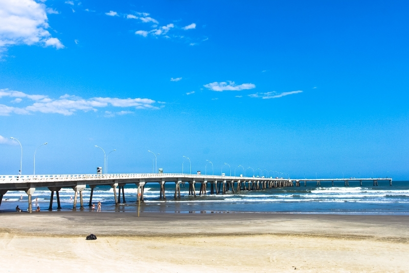
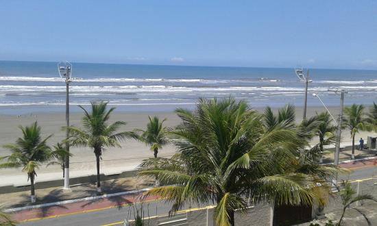
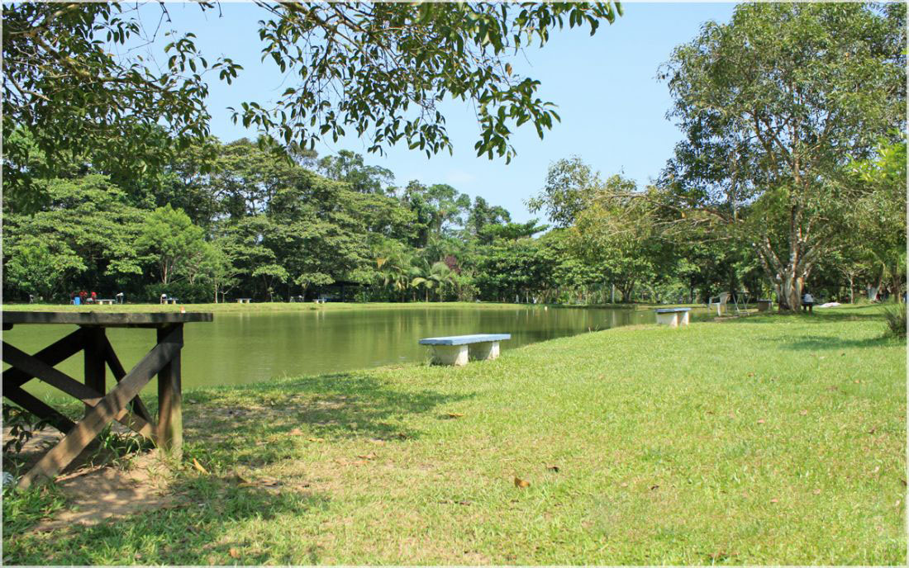
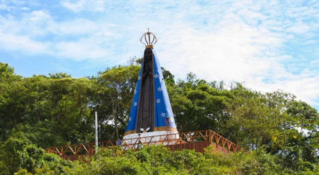
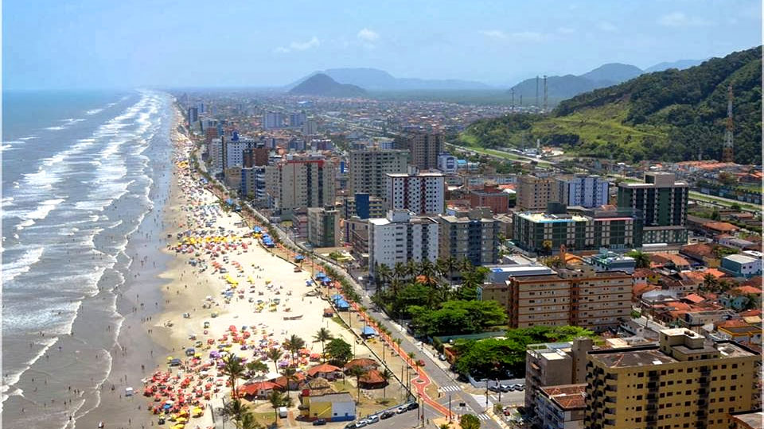
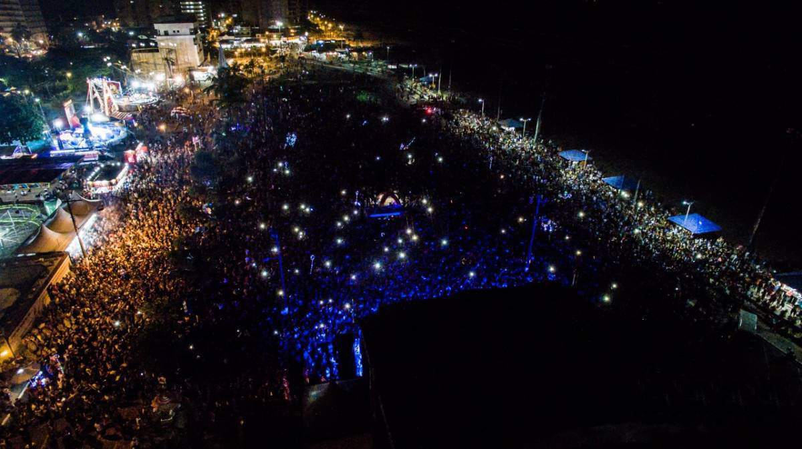
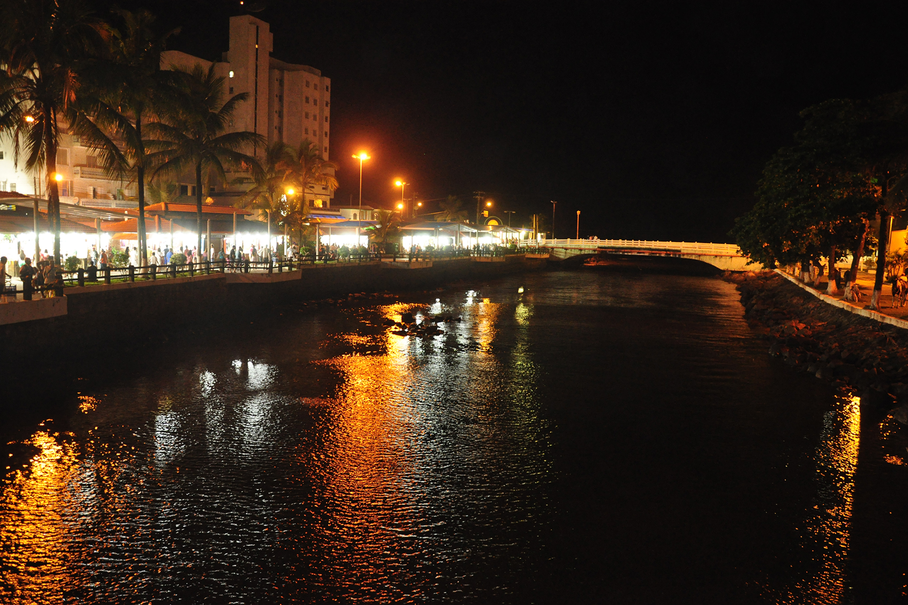
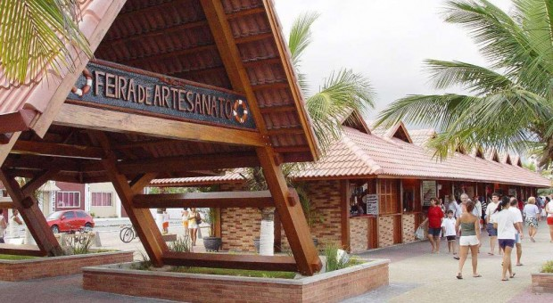

Turismo Ecológico
Selecione uma opção
Poço das Antas

É uma das principais atrações de Mongaguá, um dos pontos turísticos mais visitados, sendo um local muito procurado pelos turistas e moradores. Constitui-se de uma queda-d’água que forma uma cachoeira, terminando com uma piscina de água natural, boa infra-estrutura, com banheiro, pontes com corrimão, lanchonetes, guarita e um amplo estacionamento. Excelente lugar para banho e piquenique e para quem pretende se aventurar pelas trilhas morro acima, que levam até ás cachoeiras.
Parque Turístico Ecológico "A Tribuna"

Criado em 1996, o Parque Turístico Ecológico “A Tribuna” de Mongaguá é uma área destinada à visitação pública. O visitante passeia pelos seus 15 mil m2, observando e aprendendo em cada recinto com diferentes animais. Atualmente, o Parque possui recinto para Jabutis, um Serpentário com cobras peçonhentas e não peçonhentas, um Viveiro interativo de Aves, recinto de Quati, Jacaré, Tucanos, Gavião, além de 15 aquários tropicais e marinhos com peixes de diversas partes do globo.
Plataforma de Pesca Amadora
Visitada por inúmeros turistas e munícipes, o local é um dos cenários mais bonitos e encantadores do Brasil. Instalada na cidade em 1977, é a maior plataforma pesqueira em estrutura de concreto armado avançando 400 metros mar adentro formando um “T” e se lançando 86m para cada um dos lados. Na entrada há sanitários, local apropriado para lavagem dos pescados e apetrechos de pescas
Belvedere

O mirante do Belvedere, localizado no Morro do Jardim Aguapeú, é um ótimo lugar para ver toda a cidade. Fica junto as antenas de transmissão..
Praias Agenor de Campos
Praia mais movimentada da cidade, localizada no Complexo Plataforma, situa-se próximo da Plataforma Marítima de Pesca Amadora e do Parque Ecológico Turístico “A Tribuna”.
Complexo Zona Rural
Na zona rural da cidade pode-se desfrutar de diversas atrações, como passar o dia todo pescando, curtindo as piscinas de águas naturais ou simplesmente descansando a sombra de uma árvore. Conhecer um pouco sobre a fauna e flora da região e entrar nas águas dos rios e corredeiras que enfeitam a cidade de Mongaguá.
Morro da Padroeira
Com mais de 15 metros de altura e cerca de 2,5 toneladas, instalada numa linda trilha urbana feita em uma passarela de madeira com 150 metros de extensão. São 139 degraus em meio a mata nativa. Pode-se avistar pássaros silvestres e no deck com 30 metros acima do chão, ter uma visão privilegiada e deslumbrante da região.
Praia do Centro
Uma das principais praias da cidade, sendo uma das mais movimentadas, situa-se próximo ao centro comercial, Prefeitura Municipal de Mongaguá e Praça de Eventos Dudu Samba
Praça de Eventos Dudu Samba
Situada em frente a praia central, construída sobre a areia da praia, é o local onde se realizam todos os eventos de grande porte da cidade. A típica festa junina que acontece entre os meses de junho e julho, “Festão na Praia”, que atrai muitos turistas e moradores. Conhecida também como “Sambódromo“ por acolher os desfiles de carnaval das escolas de samba e blocos carnavalescos. A avenida recebe também os desfiles cívicos e paradas militares da Semana da Pátria e do dia sete de dezembro (aniversário da cidade).
Raul Cortez

Inaugurado em dezembro de 1996, Centro da vida cultural da cidade, seu nome em homenagem ao ator Raul Cortez ainda em vida. Oferece cursos gratuitos de musica, pintura, teclado, violão, violino, hip hop, ballet, Jazz, dança de rua, dança do ventre, teatro, dança de salão e coral, tudo para a população de Mongaguá, além de abrigar o Teatro Municipal Ronaldo Ciambroni, com capacidade para 320 espectadores. Com peças o ano todo.
Igreja Matriz Nossa Senhora da Conceição Aparecida

Construída em 1949, em estilo colonial, a igreja possui a imagem de Nossa Senhora da Conceição Aparecida trazida da cidade de Aparecida do Norte, e imagens como a de São José, Santa Rita de Cássia, São Judas Tadeu e Santa Luzia, além disso, destacam-se no templo os vitrais coloridos que representam cenas bíblicas como a “anunciação”, “nascimento de Jesus”, ”cristo redentor”, “Jesus rezando no horto das oliveiras” e a réplica da conhecida obra “Pietá” com Jesus no colo de sua mãe.
Feira Artesanato do Centro
Um sofisticado complexo de 98 quiosques com arquitetura própria de madeira maciça e tijolos aparentes. Ótimo local para compras de artesanatos locais.
Feira de Artes Plataforma
Com infraestrutura de madeira maciça e tijolos de barro, está localizada no Complexo Plataforma, conta com artesãos locais e é um ótimo lugar para compras.
Feira de Artes Plataforma
Com infraestrutura de madeira maciça e tijolos de barro, está localizada no Complexo Plataforma, conta com artesãos locais e é um ótimo lugar para compras.
Feira Artesanato do Centro
Um sofisticado complexo de 98 quiosques com arquitetura própria de madeira maciça e tijolos aparentes. Ótimo local para compras de artesanatos locais.
Praça de Eventos Dudu Samba
Situada em frente a praia central, construída sobre a areia da praia, é o local onde se realizam todos os eventos de grande porte da cidade. A típica festa junina que acontece entre os meses de junho e julho, “Festão na Praia”, que atrai muitos turistas e moradores. Conhecida também como “Sambódromo“ por acolher os desfiles de carnaval das escolas de samba e blocos carnavalescos. A avenida recebe também os desfiles cívicos e paradas militares da Semana da Pátria e do dia sete de dezembro (aniversário da cidade).
Morro da Padroeira
Com mais de 15 metros de altura e cerca de 2,5 toneladas, instalada numa linda trilha urbana feita em uma passarela de madeira com 150 metros de extensão. São 139 degraus em meio a mata nativa. Pode-se avistar pássaros silvestres e no deck com 30 metros acima do chão, ter uma visão privilegiada e deslumbrante da região.
Belvedere
O mirante do Belvedere, localizado no Morro do Jardim Aguapeú, é um ótimo lugar para ver toda a cidade. Fica junto as antenas de transmissão..